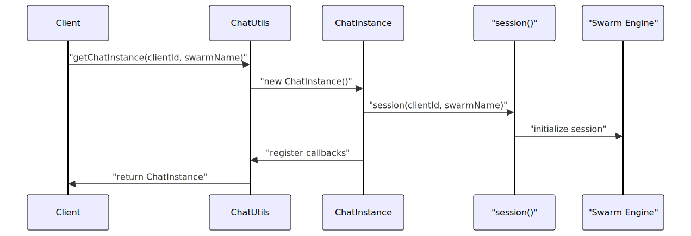
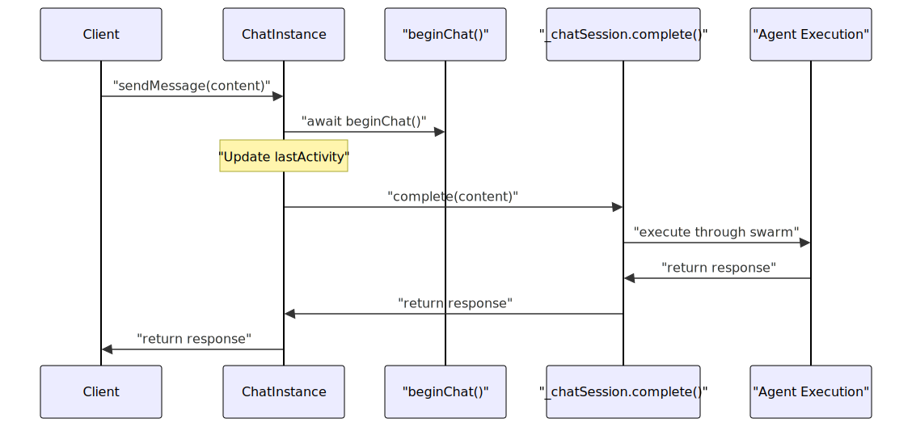

This document provides a complete example of implementing client-server chat functionality using the agent-swarm-kit framework. It demonstrates session management, message processing, agent interactions, and handling multiple concurrent clients through the Chat utility class and related components.
For information about the underlying session and agent execution mechanisms, see Session and Chat Management. For details about agent navigation patterns used in chat implementations, see Navigation System.
The client-server chat implementation in agent-swarm-kit centers around the Chat utility class and ChatInstance objects that manage individual client sessions. This system provides automatic session lifecycle management, inactivity timeouts, and seamless integration with the swarm's agent execution engine.

The ChatInstance class manages individual client chat sessions with automatic lifecycle management and inactivity tracking.
| Component | Purpose | Key Methods |
|---|---|---|
ChatInstance |
Individual session management | beginChat(), sendMessage(), dispose() |
ChatUtils |
Multi-client orchestration | beginChat(), sendMessage(), listenDispose() |
| Session Integration | Swarm execution bridge | Internal session() wrapper |
The ChatInstance constructor creates a session connection and initializes callback handlers:

The chat system implements automatic cleanup with configurable timeouts:
The checkLastActivity method determines if a session should be kept alive:

The sendMessage method coordinates message processing through the swarm system:

The system supports multiple connection patterns for different use cases:
| Pattern | Function | Use Case |
|---|---|---|
| Direct Chat | Chat.sendMessage() |
Simple client-server messaging |
| Session-based | session().complete() |
Stateful conversations |
| Connection-based | makeConnection() |
Real-time bidirectional communication |
First, define the completion logic, agents, and tools:
// Example from test files showing typical setup
const MOCK_COMPLETION = addCompletion({
completionName: "chat-completion",
getCompletion: async ({ agentName, messages }) => {
const [{ content }] = messages.slice(-1);
return {
agentName,
role: "assistant",
content: `Response from ${agentName}: ${content}`
};
}
});
const CHAT_AGENT = addAgent({
agentName: "chat-agent",
completion: MOCK_COMPLETION,
prompt: "You are a helpful chat assistant",
tools: ["navigation-tool"] // Optional navigation tools
});
const CHAT_SWARM = addSwarm({
swarmName: "chat-swarm",
agentList: [CHAT_AGENT],
defaultAgent: CHAT_AGENT
});
Using the Chat utility for simple messaging:
// Send messages through the chat system
const clientId = "user-123";
const swarmName = "chat-swarm";
// Begin chat session
await Chat.beginChat(clientId, swarmName);
// Send messages
const response1 = await Chat.sendMessage(clientId, "Hello!", swarmName);
const response2 = await Chat.sendMessage(clientId, "How are you?", swarmName);
// Listen for disposal events
Chat.listenDispose(clientId, swarmName, (disposedClientId) => {
console.log(`Session ${disposedClientId} was disposed`);
});
For bidirectional communication with server-side message emission:
// Create connection with message handler
const complete = makeConnection(
(message) => {
// Handle outgoing messages to client
console.log("Outgoing:", message);
},
clientId,
swarmName
);
// Send messages from client
await complete("User message");
// Server can emit messages independently
await emit("Server notification", clientId);
Chat sessions support agent navigation through specialized tools. The system provides templates for common navigation patterns:

Creating navigation tools using the provided templates:
// Using createNavigateToAgent template
const navigateToSales = createNavigateToAgent({
toolOutput: "Successfully navigated to sales agent",
executeMessage: (clientId, lastMessage, agentName) =>
`Processing sales inquiry: ${lastMessage}`,
beforeNavigate: async (clientId, lastMessage, lastAgent, targetAgent) => {
console.log(`Navigating from ${lastAgent} to ${targetAgent}`);
}
});
// Tool implementation
const SALES_NAVIGATION_TOOL = addTool({
toolName: "navigate-to-sales",
call: async ({ toolId, clientId }) => {
await navigateToSales(toolId, clientId, "sales-agent");
},
// ... tool schema definition
});
The chat system handles multiple concurrent sessions with proper isolation:

The system supports custom chat implementations through the adapter pattern:
// Custom ChatInstance implementation
class CustomChatInstance implements IChatInstance {
async beginChat() { /* custom logic */ }
async sendMessage(content: string) { /* custom logic */ }
async dispose() { /* custom logic */ }
// ... other required methods
}
// Register custom adapter
Chat.useChatAdapter(CustomChatInstance);
// Set custom callbacks
Chat.useChatCallbacks({
onBeginChat: (clientId, swarmName) => {
console.log(`Chat began for ${clientId} on ${swarmName}`);
},
onSendMessage: (clientId, swarmName, content) => {
console.log(`Message sent: ${content}`);
},
onDispose: (clientId, swarmName, instance) => {
console.log(`Chat disposed for ${clientId}`);
}
});
Chat sessions integrate with the event system for advanced communication patterns:
// Listen for custom events in chat context
listenEvent(clientId, "custom-event", async (data) => {
console.log("Received custom event:", data);
});
// Emit events during chat session
await event(clientId, "notification", "Important update");
// Events don't appear in message history
const history = await getRawHistory(clientId);
// Only complete() messages appear in history, not events
This client-server chat implementation provides a robust foundation for building conversational AI applications with automatic session management, concurrent client support, and seamless integration with the agent swarm execution engine.